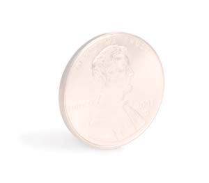

ISTOCKPHOTO/SKIPODONNELL
The benefits of home energy improvements are not always obvious because many of these projects save only small amounts of money each day, but over time, the savings multiply quickly. To look at the true benefits of any project, calculate the money and energy savings over 10 years.